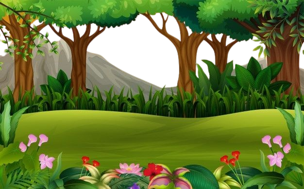
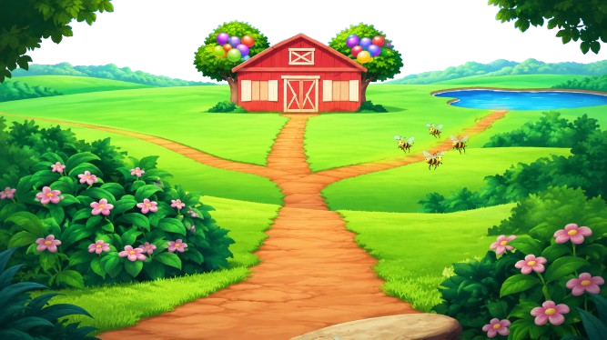

Casa da Dora
.png)
Floresta

Ponte do Troll

Grande Rio

Árvore de Chocolate
Celeiro do Benny

.png)


A Casa da Dora é o principal ponto de partida das aventuras. Ela vive ali com sua família e normalmente começa suas jornadas ao lado de Botas após consultar o Mapa. Diversos episódios começam ou terminam nesse local, tornando-o um dos lugares mais importantes da série.
A Floresta é provavelmente a região mais explorada de toda a série. Ela conecta inúmeros caminhos e destinos, servindo como passagem para montanhas, rios, jardins e outras áreas. Muitas espécies de animais vivem ali e frequentemente ajudam Dora durante suas missões.
A Ponte do Troll é um dos locais mais icônicos da série. O Troll que a guarda frequentemente apresenta desafios ou enigmas que Dora precisa resolver para atravessar. Essa ponte simboliza a importância da inteligência, da coragem e da amizade nas aventuras.
O Grande Rio é um importante obstáculo natural encontrado em diversas aventuras de Dora. Para atravessá-lo, Dora e Botas frequentemente precisam utilizar barcos, pontes ou outros meios de transporte, seguindo as orientações do Mapa. Suas margens conectam diferentes regiões e servem como passagem para vários dos principais destinos explorados na série.
A Árvore de Chocolate é um dos lugares mais curiosos e memoráveis do mundo de Dora. Diferentemente de uma árvore comum, ela produz deliciosas barras de chocolate em seus galhos, despertando a curiosidade de todos os personagens. Dora e Botas costumam passar por esse local durante algumas aventuras, seja para descansar ou admirar a paisagem.
O Celeiro do Benny é um dos principais locais da fazenda onde vive Benny. Nele são guardadas ferramentas, alimentos e outros equipamentos utilizados no dia a dia. Em diversas aventuras, Dora e Botas visitam o celeiro para ajudar Benny a encontrar objetos perdidos, organizar materiais ou resolver problemas relacionados às atividades da fazenda.
O Lago dos Crocodilos é um dos obstáculos naturais mais famosos encontrados por Dora durante suas aventuras. Suas águas são habitadas por crocodilos, tornando a travessia um verdadeiro desafio. Para chegar ao outro lado, Dora e Botas frequentemente precisam encontrar uma ponte, utilizar um barco ou seguir um caminho seguro indicado pelo Mapa.